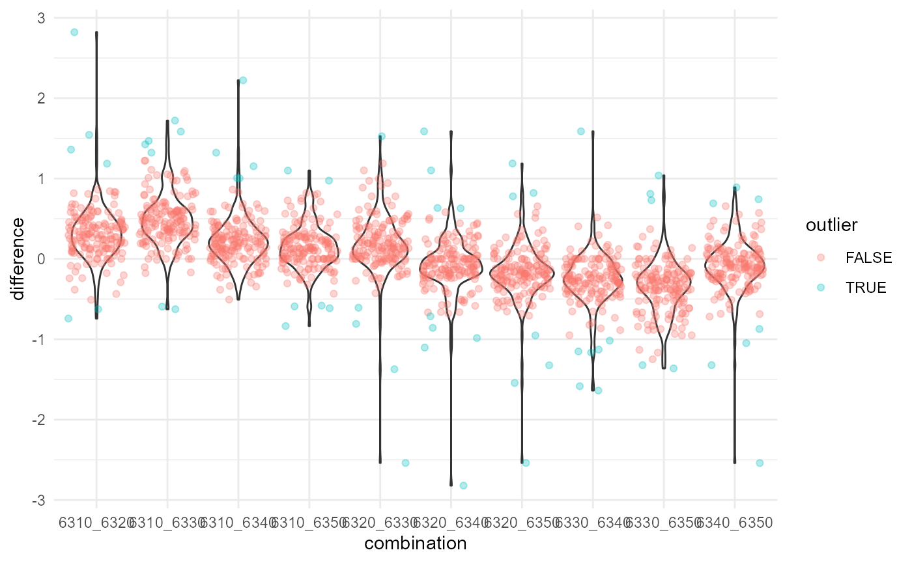

stimmbeteiligung.RmdUm Anomalien in der Stimmbeteiligung ausfindig zu machen bietet das plausi package Funktionen, die es erlauben die Differenz zwischen der Beteiligungswerten verschiedener Vorlagen systematisch über alle Zählkreise hinweg zu vergleichen.
In der Regel bestehen relativ klare Muster - gewisse Vorlagen mobilisieren stärker als andere. Hierbei sind sowohl das Thema der Vorlage, die Intensität des Abstimmungskampfes als auch die Bezugsebene des Geschäfts. ausschlaggebend. Kantonale Vorlagen weissen i.d.R. flächendekend eine tiefere Beteiligung aus als nationale Vorlagen, die am selben Abstimmungstag zur Abstimmung kommen. Dies können wir uns zu Plausibilisierungszwecken zu nutze machen. Das folgende Beispiel dient der Veranschaulichung.
## ************************************************************## * swissdd 1.0.4 *## * developed by politan.ch *## * *## * Data sources: *## * Federal Statistical Office *## * https://www.bfs.admin.ch/ *## * *## * Swissvotes *## * https://swissvotes.ch/ *## * *## ************************************************************## ── Attaching packages ─────────────────────────────────────── tidyverse 1.3.0 ──## ✓ ggplot2 3.3.2 ✓ purrr 0.3.4
## ✓ tibble 3.0.4 ✓ dplyr 1.0.2
## ✓ tidyr 1.1.2 ✓ stringr 1.4.0
## ✓ readr 1.4.0 ✓ forcats 0.5.0## ── Conflicts ────────────────────────────────────────── tidyverse_conflicts() ──
## x dplyr::filter() masks stats::filter()
## x dplyr::lag() masks stats::lag()Der Reproduzierbarkeit halber baut das Beispiel auf offen verfügbaren Daten auf. Mit dem swissdd package können die Daten für einen Abstimmungstermin der Wahl bezogen werden.
# Sys.getenv("https_proxy") # Sys.setenv(https_proxy="") # Bezug der Resultate vom 27. September 2020 data <- swissdd::get_nationalvotes(votedates = c("2020-09-27")) # Alle möglichen Kombinationen von Vorlagen combinations <-as.data.frame(t(combn(unique(data$id),2))) # Reduziere den Datensatz auf die Stimmbeteiligung und die Gebietsattribute data_wide <- data %>% select(id, canton_name,mun_name, mun_id, stimmbeteiligungInProzent) %>% #Transformation ins Wide-format pivot_wider(names_from=id,values_from=stimmbeteiligungInProzent) %>% mutate_if(is.character,as.factor) %>% #Nur Daten für den Kanton Zürich filter(canton_name=="Zürich") # Differenzen im Wide-Format # cross_fun(data_wide, combinations$V1[2],combinations$V2[2],geo_cols=c("canton_name","mun_name","mun_id")) # Berechne Stimmbeteiligungsdifferenzen diff <- get_differences(data_wide,combinations$V1,combinations$V2,geo_cols=c("canton_name","mun_name","mun_id"))
Nun haben wir die Stimmbeteiligungsdifferenzen zwischen den verschiedenen Vorlagen für jedes Gebiet berechnet. In einem nächsten Schritt können wir ausfindig machen, welche Gebiete statistisch auffällige Differenzen je Vorlagenkombination aufweisen. Hierfür nutzen wir die is_outlier_double_mad-Funktion aus dem plausi-Package.
diff2 <- diff %>% group_by(combination) %>% # Threshold für Ausreisser : Abweichung von mehr als 5 medianen Abweichungen vom Median anstatt der üblichen 3.5. mutate(outlier=is_outlier_double_mad(difference,thres=5))
Ein Plot hilft dabei ein Bild von der Verteilung der Differenzen zu erhalten und besonders auffällige Werte zu erkennen.
ggplot(diff2, aes(combination, difference))+ geom_violin()+ geom_jitter(alpha=0.3, aes(color=outlier))+ theme_minimal()+ scale_fill_viridis_d()
 Bei einigen Kombinationen bestehen in Einzelfällen Unterschiede von gegen 3 Prozentpunkten.
## # A tibble: 6 x 6
## # Groups: combination [6]
## canton_name mun_name mun_id combination difference outlier
## <fct> <fct> <fct> <chr> <dbl> <lgl>
## 1 Zürich Buch am Irchel 24 6310_6320 2.82 TRUE
## 2 Zürich Buch am Irchel 24 6320_6340 -2.82 TRUE
## 3 Zürich Regensberg 95 6340_6350 -2.54 TRUE
## 4 Zürich Buch am Irchel 24 6320_6330 -2.54 TRUE
## 5 Zürich Buch am Irchel 24 6320_6350 -2.54 TRUE
## 6 Zürich Regensberg 95 6310_6340 2.22 TRUEUm herauszufinden welche der Vorlagen dazu führen, dass Kombinationen aufällig sind:
problem_vorlagen <- diff2 %>% separate(combination,into=c("vorlage1","vorlage2"), sep="_") %>% filter(outlier==TRUE) %>% pivot_longer( cols = -c(canton_name,mun_name,mun_id, difference, outlier), names_to="vorlage", values_to="vorlage_id") %>% group_by(mun_name,mun_id,vorlage_id) %>% summarize(n=n()) %>% arrange(desc(n))
## `summarise()` regrouping output by 'mun_name', 'mun_id' (override with `.groups` argument)
problem_vorlagen## # A tibble: 85 x 4
## # Groups: mun_name, mun_id [25]
## mun_name mun_id vorlage_id n
## <fct> <fct> <chr> <int>
## 1 Buch am Irchel 24 6320 4
## 2 Hüttikon 87 6320 4
## 3 Oetwil am See 157 6320 4
## 4 Regensberg 95 6340 4
## 5 Bülach 53 6350 3
## 6 Dorf 26 6310 3
## 7 Maschwanden 8 6340 3
## 8 Schöfflisdorf 99 6340 3
## 9 Thalheim an der Thur 39 6350 3
## 10 Adlikon 21 6330 2
## # … with 75 more rows